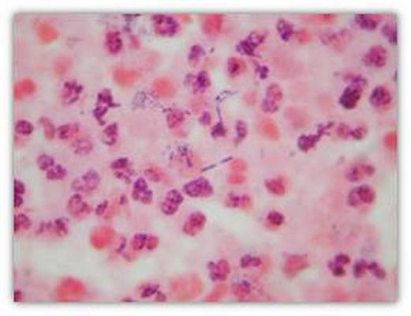
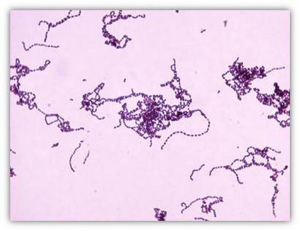
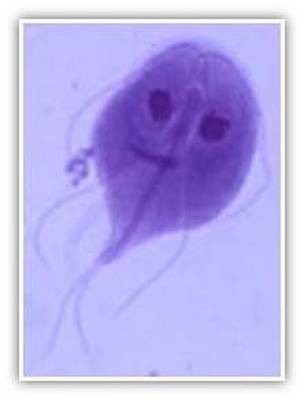
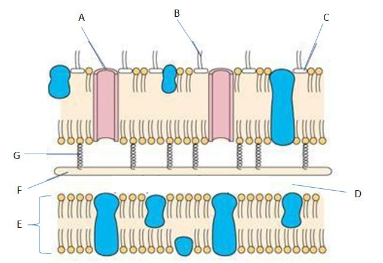
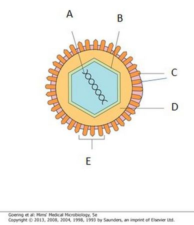
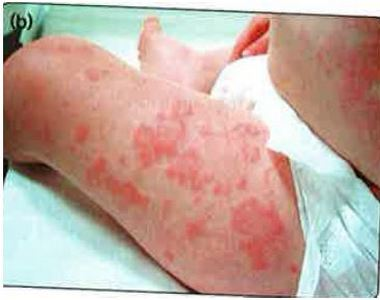
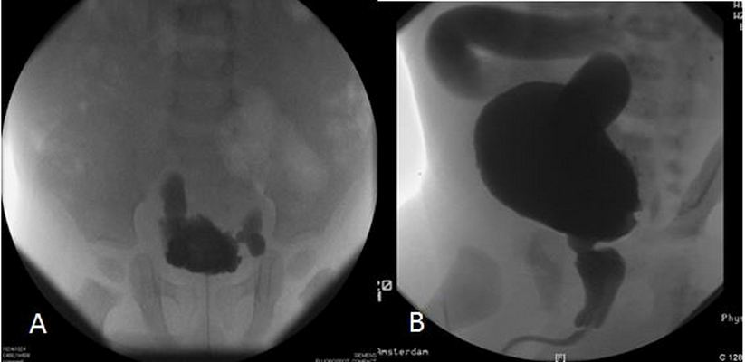

Menu
Groei en ontwikkeling2e Toetsmoment 2016‑2017
Examen inleveren
Weet je zeker dat je het examen afsluit?
Examen resetten
Al je antwoorden worden gewist en je begint opnieuw. Weet je het zeker?
Jouw resultaten
Groei en ontwikkeling · 2e Toetsmoment 2016‑2017
—
/ 63
0
Goed
0
Fout
0
Niet beantwoord
Vraag 1
Claudia is nu zes weken en drie dagen oud. Ze is à terme geboren na een ongecompliceerde zwangerschap en had een goede start. Ze maakt wel wat grappige grimassen, maar echt teruggelachen naar haar moeder of naar iemand anders heeft ze tot nu toe niet. Haar broertje deed dit al op de leeftijd van drie en een halve week. Moeder vraagt de arts op het consultatiebureau of bij Claudia sprake is van een vertraagde ontwikkeling.
Stelling: Het nog niet teruglachen door Claudia op deze leeftijd pleit voor een abnormale ontwikkeling wat dit punt betreft.
Vraag 2
De grootste versnelling in de grof-motorische ontwikkeling vindt plaats tussen de leeftijden van:
Vraag 3
Welke drie ontwikkelingsmijlpalen moeten op het consultatiebureau op de leeftijd van 3 maanden actief worden onderzocht/nagevraagd?
Meerdere antwoorden mogelijk.
Vraag 4
Een jongen van 12 maanden oud is een zogenaamde 'asymmetrische billenschuiver'.
Welke van de volgende beweringen is juist?
Vraag 5
Hoe heeft de sterfte aan suïcide onder de leeftijd van 20 jaar zich in Nederland de afgelopen 25 jaar ontwikkeld? De sterfte aan suïcide onder de leeftijd van 20 jaar is in Nederland in de afgelopen 25 jaar per persoon per jaar:
Vraag 6
Welke bewering over het Van Wiechenontwikkelingsonderzoek is het meest juist?
Vraag 7
Bij welke drie situaties noemt men een scoliose structureel? Indien:
Meerdere antwoorden mogelijk.
Vraag 8
Welke drie condities zijn geassocieerd met een mogelijke neuromusculaire scoliose?
Meerdere antwoorden mogelijk.
Vraag 9
Joram (11 jaar) moet bij vlagen erg hoesten, waarbij hij ook kortademig is met een piepend geluid bij de uitademing. Het treedt alleen op als hij in contact komt met tabaksrook, sterke parfumgeuren, baklucht en dergelijke, en ook bij inspanning buiten bij extreem koud weer. Als hij verkouden is wordt het erger.
Wat is de meest juiste benaming voor het pathofysiologische mechanisme waar Joram last van heeft?
Vraag 10
Diederik en Jonas zijn allebei 8 maanden oud. Diederik woont met zijn niet-rokende ouders (beiden advocaat) in een ruim grachtenpand in Amsterdam. Overdag wordt Diederik verzorgd door een au pair. Jonas woont met zijn beide ouders en zijn drie oudere broertjes in een oud boerderijtje waar zijn ouders een alternatief kinderdagverblijf runnen met een aantal geiten en kippen. Zijn beide ouders roken.
Welke invloed hebben de leefomstandigheden van Diederik en Jonas op de kans dat zij een allergie ontwikkelen?
Vraag 11
Sommige intoxicaties kunnen aanleiding geven tot ernstige symptomen. Geeft inname van deze stof mogelijk ernstige verschijnselen (van intoxicatie) bij kinderen?
alcohol
amoxicilline
fijnwasmiddel
knoopcelbatterij
terpentine
Vraag 12
Tijdens uw stage wordt u 's morgens op de SEH geconfronteerd met een jongen van 4 jaar die van zijn fiets is gevallen. Hij was daarna enkele seconden stil en begon toen geleidelijk hard te huilen. Hij droeg geen helm.
Welke drie bevindingen kunnen helpen om een onderscheid te maken tussen mild/matig en mogelijk ernstig schedel-hersenletsel?
Meerdere antwoorden mogelijk.
Vraag 13
Joanne (6 maanden) wordt binnengebracht op de Spoedeisende Hulp met subdurale hematomen, retinabloedingen en encefalopathie. Deze trias past bij een inflicted Traumatic Brain Injury (iTBI, voorheen 'shaken baby' genoemd).
Welke additionele letsels komen hierbij het vaakste voor?
In een regionaal ziekenhuisje in de Sahel worden veel kinderen gezien met ernstig verlopende mazelen. Ook valt op dat er veel kinderen zijn met ulcera en littekens in het hoornvlies.
Voor welke deficiëntie in de voeding zijn deze verschijnselen typisch? Een tekort aan:
Vraag 18
Kies de juiste alternatieven.
Te vroege puberteit wordt bij meisjes gezien dan bij jongens en heeft in de meeste gevallen een oorzaak.
Vraag 19
Stelling: Bij à terme geboren kinderen in Nederland is de meest voorkomende oorzaak van een te laag geboortegewicht (<2 SD) een groeihormoondeficiëntie. Deze stelling is:
Vraag 20
Aan de kinderarts wordt een meisje van 8 maanden gepresenteerd met een symmetrische doch opvallend lange en smalle schedel.
Bij welke aandoening past deze schedelvorm het beste?
Vraag 21
Streptococcus pyogenes wordt ook wel streptokok groep A genoemd. Dit betekent dat de bacterie:
Vraag 22
Plaats de meest waarschijnlijke manier van overdracht bij het oorzakelijk micro-organisme.
Sleep een optie naar de bijbehorende rij, of tik eerst op een kaart en dan op een rij.
arbovirussen
Sleep hier naartoe
Neisseria meningitidis
Sleep hier naartoe
rubellavirus
Sleep hier naartoe
Staphylococcus aureus
Sleep hier naartoe
Vraag 23
Twee dagen na een appendectomie (blindedarmoperatie) ontwikkelt de 6-jarige Jurgen hoge koorts tot 40°C. Hij voelt zich ziek, is nauwelijks aanspreekbaar en plast bijna niet meer. Bij lichamelijk onderzoek is er défense musculaire (strak gespannen, pijnlijke buik). Je denkt aan een peritonitis. Op de CT-scan is er ascites gezien dat gepuncteerd wordt en opgestuurd naar het laboratorium voor Gramkleuring en kweek. Het Grampreparaat staat hieronder (afd MMI; 1000× vergroot, olie-immersie).
Wat is/zijn de meest waarschijnlijke verwekker(s)?

Vraag 24
Een neonaat ontwikkelt 2 dagen na de geboorte koorts, drinkt nauwelijks meer en wordt suf. De moeder heeft geen klachten. Je denkt aan meningitis. In het Grampreparaat van de liquor zitten deze bacteriën (zie afbeelding).
Wat is de meest waarschijnlijke verwekker?

Vraag 25
In de triple feces test van 6-jarige Anouk met al langere tijd buikpijn en diarree vinden wij de volgende structuur in de Giemsa kleuring (zie foto; afd MMI; 1000× vergroot, olie-immersie).
Wat is de meest waarschijnlijke verwekker van haar klachten?

Vraag 26
Bacteriële endotoxines kunnen ontsteking veroorzaken door activatie van complement, resulterend in onder meer hypotensie. Deze endotoxines bestaan uit:
Vraag 27
Welke bacterie kan zowel urineweg- en gastro-intestinale infecties als meningitis veroorzaken?
Vraag 28
Dit is een schematische tekening van een bacterie. Wat wordt aangegeven met de letter F?

Vraag 29
Kies de juiste alternatieven.
Bovensteluchtweginfecties bij kinderen worden meestal veroorzaakt door een . Een voorbeeld van zo'n bovensteluchtweginfectie is bronchiolitis. Meest voorkomende verwekker is en de snelste diagnostiek is door middel van een .
Vraag 30
Noem een ernstige complicatie van mazelen.
Vraag 31
Kies de juiste alternatieven.
Op welke leeftijd vindt volgens het Rijksvaccinatieprogramma actieve inenting plaats tegen hepatitis B: ? En tegen humaan papillomavirus: ?
Vraag 32
Een patiënt raakt geïnfecteerd met een virus dat zich vermenigvuldigt en symptomen veroorzaakt. Deze verdwijnen weer. Echter, het virus wordt niet uit het lichaam geklaard. Virusreplicatie blijft bestaan gedurende het leven van deze patiënt.
Hoe wordt dit type infectie genoemd?
Vraag 33
Dit is een schematische tekening van een influenzavirus. Wat wordt aangegeven met de letter B?

Vraag 34
Een meisje van 5 maanden wordt gepresenteerd op de eerste hulp vanwege huidafwijkingen die in korte tijd zijn ontstaan (zie foto).
Bij welke aandoening passen de huidafwijkingen op de foto het beste?

Vraag 35
De moeder van Jill belt om 11.00 uur naar de huisarts en krijgt de praktijkassistente aan de lijn. Jill is 4 weken oud. Ze is à terme geboren en deed het tot nu toe prima. Ze is inmiddels 700 gram boven haar geboortegewicht. Vandaag lijkt ze niet zo lekker: ze drinkt nauwelijks aan de borst en suft dan weer in slaap. In tegenstelling tot de weken hiervoor huilt ze niet – ze maakt alleen een kreunerig geluidje. Ze is ook wat hypotoon en heeft een enigszins grauwe kleur. De rectaal gemeten lichaamstemperatuur is 35,4 graad Celsius. De huisarts rijdt op dit moment visites en heeft daarna een bespreking en vervolgens een vol middagspreekuur. Op dat spreekuur is nog één lege spoedplek, om 16.00 uur. Morgenochtend zijn er nog een aantal lege plaatsen op het spreekuur.
Wat kan de assistente nu het beste doen?
Vraag 36
Bij welke aandoening komt een sterk verhoogd (> 15 × 10⁹/l) aantal lymfocyten in het perifere bloed vaak voor?
Vraag 37
Welke vorm van immuundeficiëntie komt in Nederland bij kinderen vaker voor?
Vraag 38
Anna (3 jaar) heeft een droge huid ten gevolge van een constitutioneel eczeem.
Welke drie eigenschappen passen bij de droge huid van Anna?
Meerdere antwoorden mogelijk.
Vraag 39
Welke drie organen c.q. weefsels zijn bij taaislijmziekte (Cystische fibrose) betrokken in het ziekteproces?
Meerdere antwoorden mogelijk.
Vraag 40
Bij welke twee infecties komt centrale apneu regelmatig voor?
Meerdere antwoorden mogelijk.
Vraag 41
Thomas is een jongen van 2,5 jaar. Hij loopt goed los en klimt met behulp van de trapleuning de trap op, maar hij loopt nog niet de trap af langs de leuning. Hij zegt ongeveer 6 woordjes: papa, mama, bal, auto, nee, die. Eenvoudige opdrachten zoals 'pak je jas' en 'sla de bladzijde maar om' lijkt hij te begrijpen.
Welke uitspraak is juist?
Vraag 42
Mohammed (9 jaar) heeft een cerebrale parese en dit is vooral zichtbaar wanneer hij op het schoolplein gaat rennen. Door een medeleerling is hij uitgescholden voor mankpoot en hij heeft hierop de medeleerling een trap verkocht. Hij wordt na schooltijd op het matje geroepen bij de leerkracht en ook zijn vader is hierbij aanwezig. Vader geeft aan dat hij wel begrijpt dat Mohammed verdrietig was en gekwetst maar dat dit geen reden tot schoppen is. 'Je mag anderen, ongeacht wat ze tegen je doen, nooit zomaar schoppen. Beter had Mohammed naar de leerkracht toe kunnen stappen.'
Welke opvoedingsstijl hanteert de vader van Mohammed hierbij?
Vraag 43
De huisarts gaat het gesprek aan met een tiener van 15 jaar. Hij heeft astma waarvoor hij 2×/dag onderhoudsmedicatie gebruikt. De huisarts heeft twijfels over zijn therapietrouw. Hij gaat daarom het gesprek met hem aan over het gebruik van de medicatie.
Welke zinnen sluiten aan bij de beste benadering om de therapietrouw te maximaliseren? Vink twee antwoorden aan.
Meerdere antwoorden mogelijk.
Vraag 44
De 17-jarige M. komt naar jou als huisarts ter controle van zijn ADHD-medicatie. Hij twijfelt al langer of het nog steeds zin heeft om dit te blijven gebruiken.
Welke twee aspecten in de communicatie zijn in dit consult dan vooral van belang?
Meerdere antwoorden mogelijk.
Vraag 45
Wanneer treedt de menarche (de eerste vaginale bloeding) op?
Vraag 46
Wat is het eerste teken van de centrale puberteit bij meisjes?
Vraag 47
Kies de juiste alternatieven.
De ontwikkeling van het brein gaat in de adolescentie nog volop door, zelfs tot aan de jongvolwassenheid. Maar niet alle gebieden ontwikkelen zich even snel. Plaats de hersengebieden op de volgorde van rijping, van gebied dat het eerste is uitgerijpt tot het gebied dat als laatste is uitgerijpt. Als eerste: . Als tweede: . Als laatste: .
Vraag 48
In de adolescentie zien we dat het emotionele brein, ofwel het limbische systeem, heel actief is, terwijl de frontaalkwab nog in ontwikkeling is.
Welke twee gevolgen heeft dat voor het gedrag van pubers?
Meerdere antwoorden mogelijk.
Vraag 49
Stephanie (3 jaar en 3 maanden) komt in de late avond bij de huisartsenpost met een hese blafhoest en een inspiratoire stridor. Er zijn lichte intercostale intrekkingen. Ze maakt een matig zieke indruk. Haar lichaamstemperatuur is 38,2 graad Celsius. Ze is al twee dagen neusverkouden.
Wat is de meest waarschijnlijke diagnose bij Stephanie?
Vraag 50
Bij welke twee klinische condities past verschuiving van de long-levergrens naar caudaal?
Meerdere antwoorden mogelijk.
Vraag 51
Nederland kent routinematige inentingen (Rijksvaccinatieprogramma), maar er zijn ook vaccins beschikbaar naast dit programma. Deze vaccins worden alleen gegeven wanneer dat geïndiceerd is.
Tegen welke bacterie worden kinderen alleen op indicatie gevaccineerd?
Vraag 52
Welke twee stellingen zijn correct m.b.t. dit mictiecystogram?

Meerdere antwoorden mogelijk.
Vraag 53
Met behulp van een prenatale echo worden bij een vrouwelijke foetus bilateraal multicystic dysplastic kidneys (MCDK) gevonden.
Wat is de te verwachten prognose van dit meisje? Het meisje zal naar verwachting:
Vraag 54
Een 11-jarige jongen komt met hevige pijnklachten in het scrotum op de eerste hulp. De testes zijn palpabel waarbij de linker testis gezwollen en zeer pijnlijk blijkt bij voorzichtig optillen.
Wat is de meest waarschijnlijke diagnose?
Vraag 55
Een moeder komt met haar baby van zeven maanden op het spreekuur van de kinderarts in verband met een zwelling in het linkerdeel van het scrotum. De kinderarts schijnt met een lampje door de zwelling heen. Deze transilluminatie is positief: het linkerdeel van het scrotum licht op.
Wat is de meest waarschijnlijke diagnose bij deze baby?
Vraag 56
Welke twee verschijnselen kun je verwachten bij diepveneuze trombose?
Meerdere antwoorden mogelijk.
Vraag 57
Kies de juiste alternatieven.
Bij een man van 76 jaar wordt in de tweede intercostaalruimte rechts voor, net naast het sternum, een diastolisch hartgeruis gehoord. Bij welke hartafwijking past dit hartgeruis het beste? Bij een van de .
Vraag 58
De moeder van Tamara heeft al op jonge leeftijd met een streng beloningsprogramma de zindelijkheidstraining voor haar dochter ingezet omdat ze het verschonen van de luiers zat was. Tamara zelf wilde graag de beloningen verdienen en moeder tevreden stellen en heeft erg goed haar best gedaan om het plassen zoveel mogelijk op te houden en op gezette tijden op het toilet met brilverkleiner te plassen. De laatste periode heeft Tamara echter een paar keer urineweginfecties gehad, klaagt ze over buikpijn en heeft ze al diverse keren overdag in haar broek geplast.
Wat staat bovenaan in de differentiaaldiagnose?
Vraag 59
CASUS: Baran (er volgen twee vragen). Baran is een jongen van 6 jaar met een ernstige spastische cerebrale parese na een gecompliceerd beloop bij extreme prematuriteit.
Stelling: Bij Baran zijn in rust vermoedelijk duidelijk afwijkende bewegingen zichtbaar.
Vraag 60
Vervolg casus Baran (jongen van 6 jaar met een ernstige spastische cerebrale parese na een gecompliceerd beloop bij extreme prematuriteit).
Welke afwijkingen zijn te verwachten op een MRI van de hersenen bij Baran, indien gemaakt op 5-jarige leeftijd?
Vraag 61
Hoe is de prevalentie van depressie op de tienerleeftijd? De prevalentie van depressie op de tienerleeftijd is bij jongens vergeleken met die bij meisjes:
Vraag 62
De ouders van Frederik (3 jaar) zijn overtuigde aanhangers van natuurlijke geneeswijzen en hebben hem daarom niet laten inenten. Op dit moment heeft hij koorts. De huisarts komt, en ziet onder andere een conjunctivitis en een exantheem.
Bij welk in het Rijksvaccinatieprogramma opgenomen microbieel agens passen deze symptomen het beste?
Vraag 63
Bij welke drie in het Rijksvaccinatieprogramma opgenomen microbiële agentia wordt een vaccin gebruikt waarin polysaccharide kapselantigenen een belangrijke rol spelen?